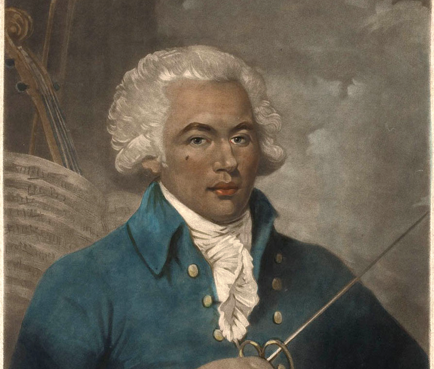

Joseph Bologne, the Chevalier de Saint-Georges.
Born in 1745 in the French Caribbean colony of Guadeloupe, Bologne was the son of a wealthy plantation owner and an enslaved 16-year-old girl from Senegal. After moving to Paris, where his mother became a free woman, he studied music, mathematics, literature and fencing at La Boëssière Academy.
...In a biographical notice written soon after his death, a friend praised “his upstanding character and his accomplishments as a swordsman, a dancer, a swimmer, an ice skater and so on,” adds Doe. “It's truly extraordinary."